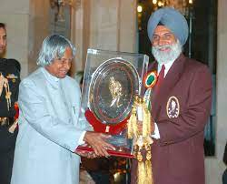

About A.P.J. Abdul Kalam
Avul Pakir Jainulabdeen Abdul Kalam was born on 15 October 1931, to a Tamil Muslim family in the pilgrimage centre of Rameswaram on Pamban Island, then in the Madras Presidency and now in the State of Tamil Nadu. His father Jainulabdeen Marakayar was a boat owner and imam of a local mosque;his mother Ashiamma was a housewife

Achievements
In recognition of his contributions to ballistic missile development and launch vehicle technology, he was dubbed “the Missile Man of India” by the media. He played a major role in India's Pokhran-II nuclear tests in 1998, the first since the country's initial nuclear test in 1974.
He was awarded Padma Bhushan in 1981, Padma Vibhushan in 1990 and Bharat Ratna in 1997 for his work in science and politics. As a young scientist in DRDO, Kalam was assigned his first project to design and develop a hovercraft for the country's defense applications.
Inspiration
Dr. Avul Pakir Jainulabdeen Abdul Kalam, a name that resonates not only with Indian citizens but also with people around the world. He served as an inspiration and idol for employees, scientists, students, and many more. Known for his remarkable attitude towards life and the challenges he faced on his journey from childhood to the presidency, Dr. Kalam’s wisdom and experiences shared in his books offer valuable lessons for students. Through his motivational speeches, he has inspired countless young minds and adults alike.